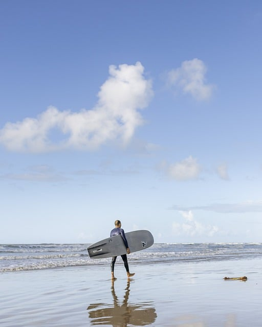

Morgan is such a kind person!
I play in four different volleyball leagues throughout the different seasons. I play outdoor sand volleyball in the summer and fall. I play indoor court volleyball in the fall, winter, and spring. It is one of my favorite things to do in my free time.
Although I enjoy many mediums, oil paint is my favorite. It allows me to be the messy artist that I am. I was featured in the MCC Voices magazine for one of my oil paintings when I went here in 2019.
Thrifting is one of my hobbies. I enjoy searching through clothes and items to find those that speak to my style. Goodwill and Savers are two of my go-to spots.
McHenry County CollegeI am taking this class in order to fufill the requirements for recieving my Graphic Design Certification. I am interested in learning the basics of the coding world to expand my knowledge, and help me in my future career. I am excited to learn new information in this class, and gain a grasp of web developtment.